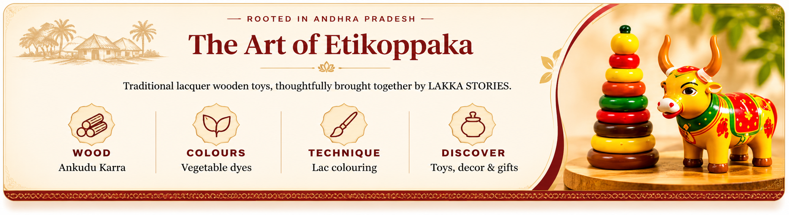
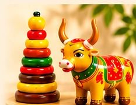

Inspired by Etikoppaka
Explore wooden toys and keepsakes connected to a distinctive Andhra Pradesh craft tradition.
ROOTED IN ANDHRA PRADESH
From playful wooden toys to thoughtful keepsake gifts, discover colourful treasures inspired by the Etikoppaka craft tradition.


ROOTED IN ANDHRA PRADESH
Traditional lacquer wooden toys, thoughtfully brought together by LAKKA STORIES.

— THE LAKKA STORIES PROMISE
Discover colourful pieces inspired by the Etikoppaka craft tradition, with friendly help whenever you need it.
Explore wooden toys and keepsakes connected to a distinctive Andhra Pradesh craft tradition.
Find colourful little treasures for celebrations, special moments and meaningful gifting.
Ask us about product details, current availability, pricing and delivery before you order.
Explore the collection and find a thoughtful treasure for your home or a special occasion.
Explore the Collection →